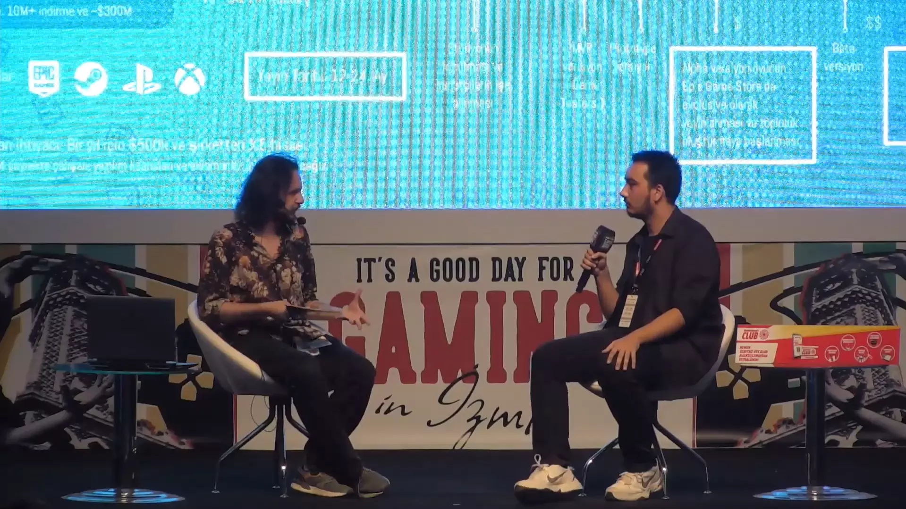
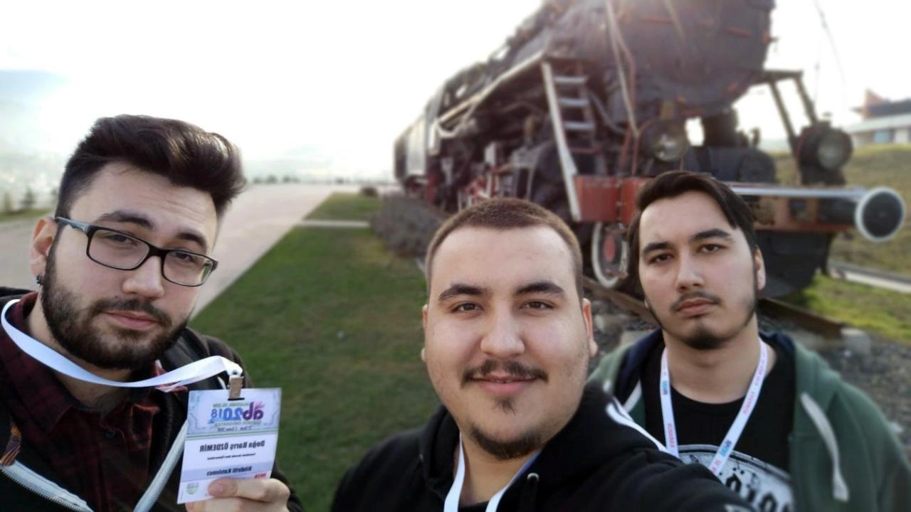
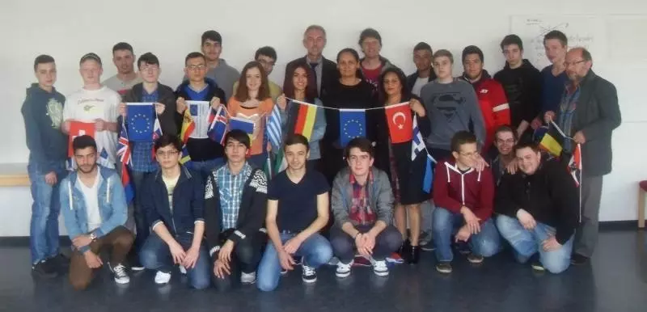
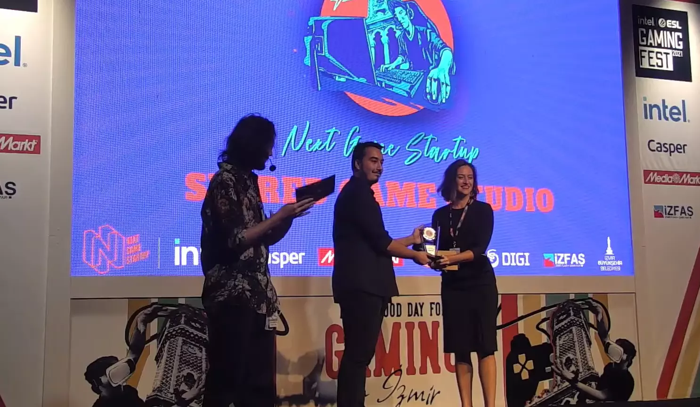

Berke Kiran
Game Developer for 12+ years
Currently
I'm studio lead and chief executive officer of a new game studio startup. Me, co-founder and chief financial officer Umut Karadirek and our experienced team will create new indie AAA games.We are looking for an investor. If you want to check our presentation and demo of the game, feel free to reach out.
About
Hi! I’m Berke Kiran a self-taught Game Developer for 12+ years. I like to write game & film stories for 16+ years.All these years, I’m focusing to improve my skills to be a game studio lead.
These skills are: programming, 3d modelling (hard surface & organic models), texturing, rigging and animating, VFX design, UI/UX design, sound design, level design, game design, writing scripts/stories, marketing, game project management and financial management of game studio.
Contact
If you have a project you’d like to discuss, feel free to reach out.Latest Youtube Video
Youtube
- 2021 / Souls of the Fallen God Trailer #3
- 2021 / Souls of the Fallen God Trailer #2
- 2021 / Souls of the Fallen God Trailer #1
- 2019 / Adam Noise: The Prologue Teaser Trailer
- 2019 / The Destroyer Teaser
- 2018 / The Narcissist
- 2018 / 3D Character Creation Process Playlist
- 2018 / The Priest
- 2017 / Showreel 2017
- 2016 / Showreel 2016
- 2016 / Orc Leader
Characters
- 2021 / Future
- 2020 / Hunter
- 2020 / Cain
- 2020 / Creature
- 2019 / The Destroyer
- 2019 / Na'amah and Enoch Statues
- 2018 / Black Wolves (Rune Mage)
- 2018 / The Guard
- 2018 / The Priest v2
- 2018 / The Narcissist
- 2018 / The Priest v1
- 2018 / Priest Statue
- 2017 / Boromir
- 2016 / Sleeping Creature
Projects
- 2021 / Django Restaurant Website
- 2020 / Laravel Business Website
- 2020 / Mortal Dungeon Game
- 2020 / Void Runner 3D Game
- 2020 / 2D Shooter Game
- 2020 / Shinet Game
- 2020 / 3D Puzzle Game
- 2020 / Project Patient Game
- 2020 / Bomber Helicopter Game
- 2018 / Medieval Village Environment
- 2018 / The King's Hall Android Game
- 2018 / 2018 Portfolio Website
- 2018 / B21 Android Game
- 2017 / 2017 Portfolio Website v2
- 2017 / 2017 Portfolio Website v1
- 2016 / 2016 Portfolio Website v2
- 2016 / Video Games Website
- 2016 / 2016 Portfolio Website v1
- 2015 / 2015 Portfolio Website v5
- 2015 / 2015 Portfolio Website v4
- 2015 / 2015 Portfolio Website v3
- 2015 / 2015 Portfolio Website v2
- 2015 / 2015 Portfolio Website v1
- 2015 / Unreal Engine 4 Snow system v2
- 2015 / Unreal Engine 4 Snow system v1
- 2014 / Photo Galleries Website
- 2013 / Quick Write Browser Game
Experience Resume (pdf)
-
Backpack Games, Turkey
July 2020 - August 2020 (Internship)
Unity Developer -
Linetec Studio, Germany
July 2018 - December 2018 (Freelance)
Character Artist -
TaleWorlds Entertainment, Turkey
June 2018 - July 2018 (Internship)
3D Artist -
Ekim Gida, Turkey
July 2013 - August 2013 (Internship)
IT Specialist -
Uludag Ihracatcilar Birligi, Turkey
July 2012 - August 2012 (Internship)
IT Specialist
Education
-
Karabuk University, Turkey
September 2015 – September 2021
Bachelor of Computer Engineering
GPA: 3.0/4.0 -
OIB Automotive Technical High School, Turkey
September 2011 – June 2015
IT Database Programming
Diploma Score: 87/100
Graduated in 2015 with a class rank of second out of 724 graduates.
Organization
-
Next In Game, Turkey
September 2021
Next Game Startup 2021
 -
Karabuk University, Turkey
January 2018 - February 2018
Academic Information 2018
 -
OIB Automotive Technical High School, Turkey
May 2014 - June 2014
Comenius Bilateral School Partnerships
Between OIB Automotive Technical High School in Bursa/Turkey and Oscar Von Schule in Kassel/Germany.

Awards
-
Next In Game, Turkey
September 2021
Next Game Startup 2021 Third Award
In Next Game Startup 2021, which 72 teams and a total of 122 people participated, I won the third award with the game Souls of the Fallen God I developed alone in 7 months.
 -
OIB Automotive Technical High School, Turkey
June 2015
Outstanding Achievement Certificate
Graduated in 2015 with a class rank of second out of 724 graduates. -
OIB Automotive Technical High School, Turkey
January 2015
Honor Certificate -
OIB Automotive Technical High School , Turkey
January 2013
Honor Certificate
Interests
Things I spend my time reading over, tinkering with and learning about.- Game Design & Development
- 3D Character Modelling
- Front-End & Back-End Development
- Story Writing
- Watercolor Painting
Social Media
You can check out my works.
© Berke Kiran 2021